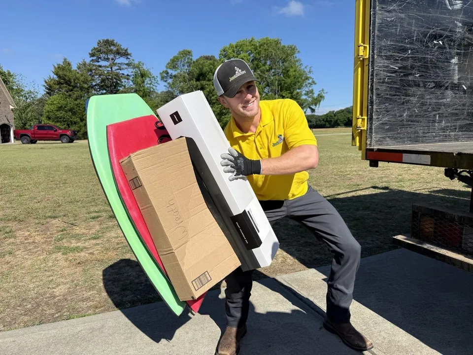

Greensboro, NC
Estate Cleanouts
Serving Guilford County and nearby towns in Forsyth, Alamance, Randolph, Rockingham and Davidson Counties
We work around the family's timeline and set aside what matters.
- Free on-site estimates
- No obligation
The whole property, start to finish
Family out of town, a realtor or an attorney, a closing date. We work around all of it.
What we handle
The whole homeEvery room, garage and outbuilding
- Furniture and appliances
- Closets, drawers and cabinets
- Basement, attic and garage
- Sheds and storage buildings
- You don't sort or stage anything
What the family keepsYou tell us what stays
- We work room by room
- We flag what you tell us to watch for
- Take anything irreplaceable out before we start
Working with the estateExecutor, realtor, family out of town
- We coordinate with the realtor or attorney
- Family can be out of town
- Work around a listing or closing date
Where things goRecycled, donated or disposed of responsibly
- We sort out where each item needs to go
- Want something donated? Tell us first
- We try to match it with a donation center
Every estate is different. Call and talk it through.
Call (336) 608-5115How a job goes



What customers said
 4.9Google rating from 3,080+ reviews across NC
4.9Google rating from 3,080+ reviews across NC
★★★★★We just used the Junk Doctors to clean out 10 years of accumulated junk in our basement. They were fantastic: prompt, professional, friendly, and reasonably priced. They even swept up our garage on the way out (despite it being our mess, not theirs). Recommend them highly.
Janet B. · Basement cleanout
★★★★★We are sending a big thank you to the Junk Doctors of Greensboro for coming out to move furniture out of my sisters apartment. She lives on the second floor and appreciated the professionalism and kindness of the Junk Doctor's team. They called and advised what time they would be there and arrived on time and did a great job. We really cannot thank V and JK enough for all they did!! They represent your company well and we would definitely use Junk Doctors in the future. My sister is one satisfied customer!!
Deborah S. · Furniture removal, Greensboro
★★★★★The guys were on time and extremely efficient at removing the junk! Respectful of property and up front with the cost! Would definitely use them again!
Candice H. · Cleanout, Greensboro
From reviews Junk Doctors customers left, as shown on junkdrs.com.
Reviews and rating pulled live from Google.

The Junk Doctors crew
Christian Fowler and Lee Godbold started Junk Doctors in Raleigh in 2011. It's NC owned and operated, with offices in Raleigh, Charlotte and Greensboro.
Crews are background checked, licensed and insured, and paid hourly, never on commission, so nobody has a reason to inflate your price.
Where we work
All of Guilford County, plus nearby towns in the shaded counties.
- Guilford County
- Forsyth County
- Alamance County
- Randolph County
- Rockingham County
- Davidson County
Near the line?
Give us a call. We may be able to come to you, especially for bigger jobs.
Questions people ask before they call
Something else on your mind? Call and ask.
(336) 608-5115
Does someone from the family need to be there?
Not the whole time. Walk us through what stays, or tell us on the phone, and we can work while you're away.
Can you work with the realtor, executor or estate attorney?
Yes. Tell us who to coordinate with and we'll work around their timeline.
Can you set things aside for the family to look at?
We flag what you tell us to watch for. We can't tell what's valuable to your family, so anything irreplaceable should come out before we start.
What happens to furniture that is still good?
We look at what you have and decide where each item needs to go. Some things are recycled, some are donated, and the rest is disposed of responsibly. Want something donated? Tell us and we'll try to match it with a donation center. What a center accepts is up to them.
How long does an estate cleanout take?
It depends on the size of the home and what's on the property. We'll tell you what to expect once we see it, and bigger homes can take more than one day.
More questions (2)
How is it priced?
We walk the property with you and give you one firm price for the whole cleanout. No per item billing. You approve it before we start.
When do crews work?
Monday to Saturday, 8am to 7pm. Call to get on the schedule.

Ready when you are
Get your free on-site estimate
The crew gives you a firm price on site before anything moves.
Serving Greensboro & nearby towns